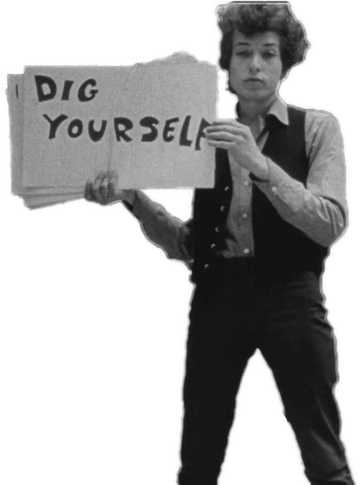

Bob Dylan é um cantor e compositor norte-americano de folk. Um dos ícones da contracultura. É considerado um dos maiores compositores do século XX. Prêmio Nobel de Literatura de 2016.
Dylan iniciou sua carreira apresentando-se em shows e em bares, no começo dos anos 60, despontado com letras enigmáticas e belas, com sua voz fanhosa e o folk reinventado, como algo que as pessoas nunca tinham ouvido antes. Sua originalidade o acompanhou durante toda carreira
Dylan conseguiu reconhecimento com o álbum "The Freewheelin' Bob Dylan" (1963), o segundo com a gravadora Colúmbia Records. O grande sucesso do álbum foi “Blowin in the Wind”, canção emblemática, considerada uma das maiores no conjunto de seu repertório musical. Nos anos seguintes, gravou "Mr Tambourine Man", "Like a Rolling Stone", essa última, depois de envolver-se com polêmicas em 1965, no Newport Festival, por ter inserido guitarra elétrica em suas músicas, o que desagradou os fãs de folk mais conservadores. Em 1969, no álbum "Nashville Skyline”, a canção “Lay Lady Lay” foi destaque.
No dia 3 de maio de 2012, Bob Dylan foi condecorado com a Medalha da Liberdade, a maior honra civil dos Estados Unidos. Na cerimônia, Dylan foi condecorado pelo presidente Barack Obama, que não poupou elogios ao cantor, mas Dylan entrou mudo e saiu calado, ao seu estilo. No dia 13 de outubro de 2016 foi homenageado com o Prêmio Nobel de Literatura.
| Album | Ano |
|---|---|
| Bob Dylan | 1962 |
| The Freewheelin' Bob Dylan | 1963 |
| The Times They Are a-Changin' | 1964 |
| Another Side of Bob Dylan | 1964 |
| Bringing It All Back Home | 1965 |
| Highway 61 Revisited | 1965 |
| blonde on blonde | 1966 |
| john wesley harding | 1967 |
| Nashville Skyline” | 1969 |
| Self Portrait | 1970 |
| New Morning | 1970 |
| Pat Garrett & Billy the kid | 1973 |
| Dylan | 1963 |
| Planet Waves | 1974 |